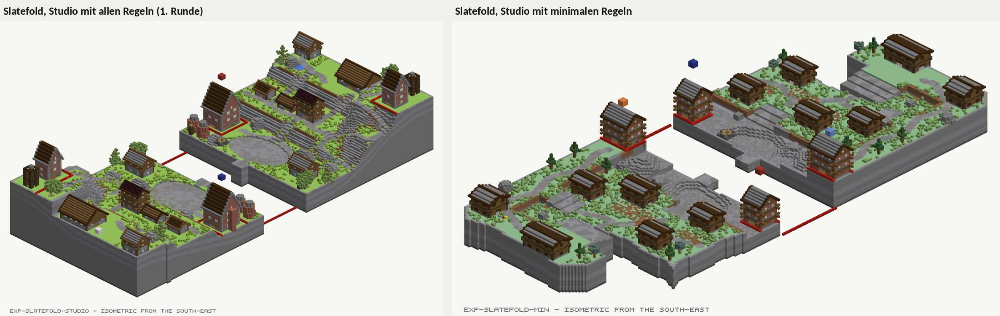
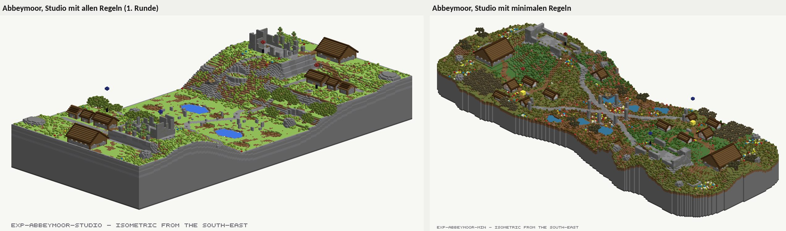
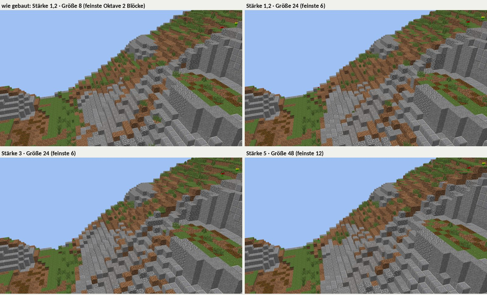
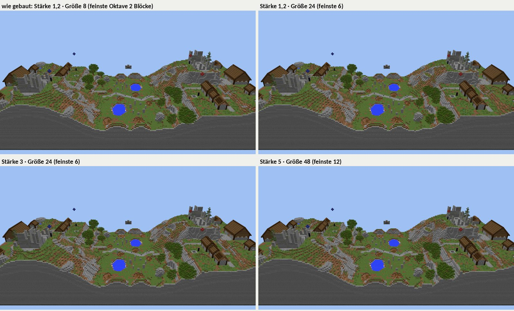
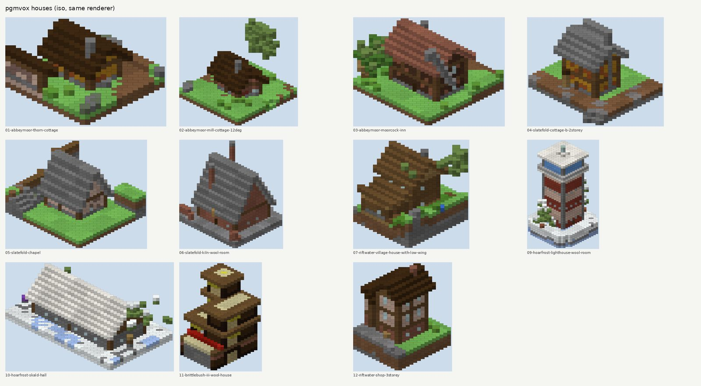
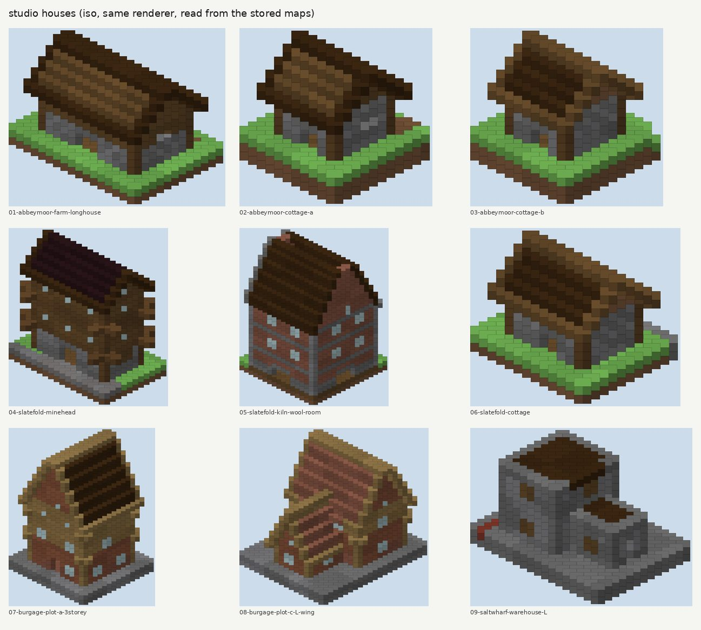

Studio 2.0 Fahrplan
Was die Versuche von heute zeigen, wie Studio 2.0 aufgebaut sein kann, und welche Entscheidungen bei dir liegen. Am laufenden Studio ändert sich dadurch nichts. Alles entsteht auf einem eigenen Zweig und kommt erst nach einer Beta auf pgmstudio.de.
- Gelände wird eine Liste von Ebenen mit Bereichen: Hügel hier, Schlucht dort, Tafelberg, See, Fluss. Der heutige Höhen-Löser bleibt als eine Ebene unter vielen. Du kannst das im Ebenen-Prototyp selbst ausprobieren.
- Tunnel, Höhlen und Unterseiten sind echte 3D-Ebenen. Sie laufen nach dem Gelände im Blockraster. Der Trick mit Ausschnitt und Deckel fällt weg.
- Der Plan bleibt, aber als Werkzeug für Spielteile. Ein Spielteil ist Form, XML und Stempel zugleich und lässt sich frei auf die Karte setzen. Die XML entsteht immer aus dem Intent, nichts davon geht verloren.
- Häuser: Der Großteil ist Daten. Gebraucht werden Lehmfarben und Treppendächer in der Bibliothek, dazu drei neue Felder und eine Drehung. Die Stockwerke sind nicht die Ursache.
- Die Regeln waren nicht die Bremse. Ein Board aus dem Versuch ohne Regeln ging unverändert durch das Studio mit allen Regeln. Blockiert hat nur das Spaltenmodell (SK13, eine Gruft). Ohne Spielregeln rutschten die Wollräume wieder an die Front. Regeln teilen sich darum in drei Stufen: hart, Hinweis, Messwert.
Regeln aus: der Versuch
Die Regeln waren nicht der Grund, warum die Studio-Boards schlicht aussahen. Zwei Sonnet-Agenten haben dieselben zwei Briefings wie in der ersten Runde gebaut (Slatefold, Abbeymoor), auf einem zweiten lokalen Studio mit Rules:Mode=minimal: Nur Vertrag, Physik, Ziele und baubare Geometrie bleiben hart. Danach habe ich beide fertigen Boards unverändert als Trockenlauf gegen das Studio mit allen Regeln geschickt.
| Board | Trockenlauf mit allen Regeln | Was abgelehnt worden wäre | Hinweise, die es ohnehin gibt | Bauzeit |
|---|---|---|---|---|
| Slatefold (CTW) | 200, angenommen | nichts | 22× EL1, WL10, WL11, WL18, FR6, FR9, G8, LN5, SK27, 2× DR-TONE | ≈ 26 min |
| Abbeymoor (DTM) | 422, abgelehnt | 11× SK13: die Treppe und der Gang in die Gruft | 3× EL1, GO1, GO2, GO3, LN5, ST9 | ≈ 25 min |
Die Lauf- und Layoutregeln sind beim Bauen über die Schnittstelle heute schon nur Hinweise. Slatefold ging mit allen Regeln unverändert durch. Der Agent hatte geglaubt, die vollen Regeln hätten seine Wollräume zurückgezogen. Das stimmt nicht: WL10, WL18 und FR9 kommen dort als Hinweis, nicht als Ablehnung.
Was wirklich blockiert, ist strukturell. Die einzige Ablehnung war SK13: Boden, der in einen Ausschnitt zurückgelegt wird. Das ist genau das Spaltenmodell aus dem Abschnitt Schichten oder 3D. Der Agent wollte eine Treppe und einen Gang unter die Abtei bauen. Daneben lässt die Ausstattung still Dinge fallen: ein Cottage neben dem Marktkreuz (OB19), Felsen neben Wegen (DR-ROAD, DR-KEEP), ein Cottage über einem Weg (DR-CROSS). Mehrere davon hat der Agent ohnehin verschoben.
Ohne Spielregeln wandern die Ziele an die falsche Stelle. In Slatefold stehen beide Wollräume an der Frontlinie, 8 Blöcke Weg bis zur Kreuzung. Genau das hattest du in der ersten Runde als falsch markiert. Diese Regeln gehören also nicht weg, sondern sichtbar ins Prüfblatt, und zwar bevor gebaut wird.


Zwei Nebenbefunde aus den Berichten, noch nicht von mir nachgeprüft: follow: 100 auf einer Gesteinsschicht antwortete mit 200 ohne Hinweis und malte nur Stein. Eine Formänderung, deren Umriss sich selbst kreuzt, wurde einmal gespeichert. RQ1 lehnt im minimalen Modus weiter ab, das habe ich geprüft.
Berichte: reports/exp-slatefold-min.md, reports/exp-abbeymoor-min.md. Zusammenfassung: analysis/freeform-vs-studio/experiment/RULES-MINIMAL.md.
Noise: der Versuch
Auf einer Karte, die mit Höhenmarken gebaut ist, ändert der Grain-Wert fast nichts. Ich habe Abbeymoor (Studio) dreimal neu gebaut: unverändert, dann mit größeren Hügeln (Größe 24) und mit großen, kräftigen Hügeln (Stärke 5, Größe 48). Von den 26.904 Landspalten bewegten sich im stärksten Fall 5.008 (19 %), und keine um mehr als 4 Blöcke. Der Anteil benachbarter Spalten mit 2 oder mehr Blöcken Höhenunterschied stieg von 5,3 % auf 5,9 %.
Der Grund steht im Löser: Grain verändert nie eine Spalte, die eine Höhenmarke festlegt (ReliefSolver: „grain never overrides a statement“). Auf diesem Board bewegten sich nur 19 % der Spalten überhaupt; der Rest liegt unter Flächenmarken oder bewegte sich um weniger als einen halben Block. Das treppige Aussehen kommt von den flachen Marken-Flächen und den gestuften Hängen dazwischen, auf die der Anstrich Stein legt. Der Hebel ist also nicht ein anderer Standardwert, sondern Rauschen als eigene Ebene mit eigenem Bereich, die keine Marke überschreibt.


Häuser: der Vergleich
Die Stockwerke sind nicht die Ursache. Das Studio hat sogar das reichere Modell: Es kennt pro Stockwerk Höhe, Wand, Pfosten, Fenster, Decke und Balken, dazu Flügel und eine Leiter zwischen den Stockwerken. Beide bauen ein Stockwerk gleich: drei Lagen Wand, eine liegende Holzlage, darin der Boden, oben das Dach. Ein Sonnet-Agent hat beide Seiten mit demselben Renderer gezeichnet.


Vier Dinge machen den Unterschied, nach geschätzter Wirkung:
- Steinwände statt Lehm. 10 der 57 Häuser in der Bibliothek sind ganz aus Stein. Keines hat gelben, orangen oder braunen Lehm, also die Farben, die pgmvox nutzt. Das ist reine Datenarbeit.
- Dächer aus ganzen Blöcken. Keines der 57 Bibliothekshäuser setzt
roof.stair, obwohl der Stamper Treppendächer kann. Auch das sind nur Daten. - Fachwerk, Kamin, Holztür. pgmvox setzt im Obergeschoss alle vier Blöcke einen Pfosten, auf jedes Haus einen Kamin und eine Fichten- oder Eichentür. Dem Studio fehlen alle drei.
- Jede Drehung. Ein pgmvox-Haus kann um 12° gedreht stehen. Im Studio stehen alle Häuser achsparallel und darum in einer Reihe.
Der Hoarfrost-Turm läuft nicht über das Hausmodell. Er ist von Hand geschriebener Code im Board (gen.py, Zeilen 219–282): Lehm in Streifen zu je vier Lagen, Eisengitter-Schlitze, alle fünf Lagen ein Boden mit Leiterluke, ein verglaster Laternenraum und eine Galerie außen. Das Studio könnte ihn großteils ausdrücken. Es fehlen die Holztür, die Galerie außerhalb des Grundrisses, die Laternensäule und Luken auf gewählten Böden. Die Wollhäuser der Grammatik-Boards sind ebenfalls ein eigener Weg (brittle.house), mit zurückgesetzten Stockwerken und Traufen.
Dem pgmvox-Modell fehlt, was das Studio hat: Flügel (also auch das Zwerchhaus mit Giebel im Giebel), Stil pro Stockwerk, Fensterformen, Vorbauten, Balken, eine Leiter zwischen den Stockwerken, Prüfung und Namen.
Ins JSON des Studios passt das als Erweiterung von HouseStyle, nicht als zweites Format:
"storeys": [{ …,
"bays": { "period": 4, "post": {…}, "walls": "long" }, // neu: Fachwerkpfosten
"head": { "kind": "laidLog", … }, // neu: Holzlage auf jedem Stockwerk
"jetty": { "reach": 1 }, "setback": 1, "eave": 1 // neu: Vorkragen, Rücksprung, Traufe
}],
"chimney": { "body": {…}, "cap": {…}, "at": "rear", "above": 2 }, // neu
"doorway": { "door": "spruceDoor" } // neuer Wert, nicht für Wollräume
// und am platzierten Haus: "heading": 12 // neu: Drehung in Grad
Der volle Bericht mit 22 Bildern, Zeilennummern und einem vollständigen Beispielhaus liegt in analysis/freeform-vs-studio/houses/HOUSES.md.
Schichten oder 3D: wie pgmvox einen Tunnel baut
pgmvox hat von Anfang an ein echtes 3D-Raster, und jede Operation schreibt Blöcke hinein. Zuerst füllt das Gelände jede Spalte bis zu ihrer Höhe mit Fels, Erde und Gras. Danach setzt ein Tunnel einfach Luft in die Zellen eines Schlauchs entlang einer Linie. Er hält dabei mindestens cover Blöcke Abstand zur Oberfläche und schneidet nie in Wasser. Weil der Fels schon da ist, muss nichts drumherum gebaut werden. Spätere Operationen überschreiben frühere. Hinzufügen heißt Füllen (auch mit Körpern wie Kugel, Zylinder oder Differenz), Löschen heißt Luft setzen.
Das Studio speichert den Boden spaltenweise: Pro Ebene hat jede Spalte genau einen Abschnitt von Boden bis Oberkante. Ein Ausschnitt (subtract) entfernt immer die ganze Spalte, er hat keine Höhe. Für einen Tunnel braucht man darum einen Ausschnitt und darüber einen Deckel (override-add ab der Tunneldecke), dazu eigene Ebenen für Boden und Leitern. Die Gruft der Studio-Abbeymoor brauchte 8 Ausschnitte, 7 Deckel und 4 gebaute Ebenen. Die pgmvox-Gruft ist eine Liste von Zellen, die ausgehöhlt werden (crypt.py, 158 Zeilen mit Halle, Treppe, Gang und Ausbau).
In 2.0 bleibt das Spaltenmodell für das Gelände, weil es schnell ist, im Browser läuft und sauber spiegelt. Danach kommt eine zweite Gruppe von Ebenen, die direkt im Blockraster arbeitet: Tunnel, Kammer, Schacht, Füllkörper und die Unterseite einer Schwebeinsel. Das Blockraster (VoxelWorld) gibt es im Studio schon. Ein Tunnel wird damit eine einzige Ebene: {"op": "carve.tunnel", "points": [[x,y,z], …], "radius": 2, "cover": 3}.
Aufbau von Studio 2.0: ein Dokument aus Ebenen
Eine Karte ist eine geordnete Liste von Ebenen, und jede Ebene ist eine Operation mit Art, Bereich und Werten. Die Reihenfolge ist die Bedeutung. Was später kommt, wirkt auf das Frühere. Jede Ebene lässt sich ein- und ausschalten, verschieben und im Browser über ihren Bereich bearbeiten. Ein Agent schreibt genau dieselbe Liste als JSON. Jeder Schritt wird zwischengespeichert, solange sich seine Werte und alles davor nicht ändern. Darum zeigt das Studio jeden Zwischenstand sofort, und ein Diff zeigt geänderte Werte und geänderte Wirkung.
Der Plan der Orte: Name, Zweck, Zugang, Wege, Zielwerte. Er baut nichts, aber alles darunter kann sich auf seine Orte beziehen (Prüfblatt-Prototyp).
Insel-Umriss, Hügel im Bereich, Schlucht entlang Linie, Tafelberg, Terrassen, See, Fluss, Höhenmarken (der heutige Löser), Glätten, Anstrich nach Neigung und Schichten im Fels (TP24/TP26 bleiben).
Tunnel, Kammer, Schacht, Füllkörper (Kugel, Zylinder, Differenz), Unterseite von Schwebeinseln, Überhänge.
Spawn, Wollraum, Monument, Core, Punkt, Bauzone, Schutzzone, Wand. Jedes ist Form, XML und Stempel.
Häuser aus Hausstilen mit Drehung, Bauten aus Grammatik-Regeln, Siedlungen als Gruppe.
Bäume, Felsen, Wege, Bodenbewuchs, Kisten, Requisiten.
Aus den Spielteilen abgeleitet: Ziel-Markierung, Bauzonen-Rand, Verteidigungswand, Beute, Prüfung der Schwebehöhe. Pro Spielteil abschaltbar.
Der Agent bekommt damit die Freiheit von pgmvox, ohne die Werkzeuge des Studios zu verlieren. Er beginnt mit Orten und Gelände statt mit Rechtecken, setzt die Spielteile dorthin, wo die Landschaft sie haben will, und alles bleibt im Browser sichtbar und änderbar.
Grammatik als eigene Ebenen-Familie
Eine Grammatik-Regel zerlegt eine Form in Teile und gibt jedem Teil Material und Muster. Das Anmalen eines Rechtecks im Studio ist die einfachste Regel: eine Form, ein Material. pgmvox (grammar.py, brittle.py) geht weiter: Abschnitte, Umrisse, Flächen mit betonten Feldern, eingelassene Muster und Symbole. Sandreach zeigt, dass Grammatik und natürliche Landform zusammengehen. Die Insel ist Landform, die Bauten darauf sind Grammatik.
In 2.0 ist Grammatik eine Ebene, die auf jede Form wirkt: einen Baukörper, eine Wand, eine Felswand oder einen Wollraum. Die Regeln selbst sind Daten in der Bibliothek, genau wie Hausstile, und damit im Browser bearbeitbar und für Agenten schreibbar. Der Schritt-für-Schritt-Gang durch Claywork und Brittlebush III liegt im Rezept-Inspektor.
Spielteile und XML
Der eigentliche Wert des Plans ist nicht das Rechteck, sondern dass ein Teil seine XML mitbringt. Ein Rechteck mit der Rolle wool-room wird heute zu Raumregion, Wolle, Monument, Schutzfilter und Stempeln. In 2.0 bleibt genau das, aber das Teil darf jede Form haben und überall stehen:
{ "op": "piece.woolRoom", "id": "red-wool", "team": "blue-team", "color": "red",
"shape": { "polygon": [[-48,-80], [-28,-80], [-28,-60], [-48,-60]] },
"wool": [-38, 21, -70], "stamps": { "loot": true, "marker": true } }
Daraus schreibt der Intent die XML, wie heute. Dies ist ein Ausschnitt aus der Slatefold-Karte des Studios:
<wool team="blue-team" color="red" location="-38,21,-70" monument="red-blue-monument"/> <rectangle id="red-wool" min="-48,-80" max="-28,-60"/> <union id="reds-woolrooms"><region id="red-wool"/><region id="orange-wool"/></union> <all id="reds-woolrooms-filter"><filter id="not-red"/><filter id="woolrooms-filter"/></all>
Die XML bleibt die Quelle der Wahrheit. Jedes Spielteil schreibt in den Intent, der Intent schreibt die XML, und Configure zeigt und ändert dieselben Teile. Der Rechteck-Plan und der Generator bleiben als ein Weg, viele Spielteile und das erste Gelände auf einmal zu erzeugen. Sie sind aber nicht mehr der einzige Einstieg.
Stempel, konkret
Ein Stempel ist eine kleine Struktur, die das Studio aus einem Spielteil ableitet und am Ende in die Welt setzt. Er ist keine eigene Zeichnung. In 2.0 bilden die Stempel die letzte Gruppe von Ebenen, und jeder lässt sich pro Spielteil abschalten.
| Stempel | Was er setzt | Aus welchem Teil | Studio heute | pgmvox |
|---|---|---|---|---|
| Ziel-Markierung | schwebender Marker über dem Ziel | Wolle, Monument, Core | GoalMarkerStamper | fehlt |
| Bauzonen-Rand | Redstone-Umriss an der Kante der Bauzone | Bauzone | BuildMarkerStamper | von Hand |
| Verteidigungswand | Bedrock-Wand mit Truhen in der Front | Wand vor dem Wollraum | StructureStamper | defence_chests (0.19) |
| Wollraum-Beute | Truhen mit Wolle und Blöcken | Wollraum | WoolChests | wool_chests |
| Spitzhacke zum Material | Kit-Eintrag in der XML | Monument | DestroyKitPairing | von Hand |
| Schwebehöhe | mindestens 3 Luft unter Monument und Core, von unten mit ein paar Blöcken erreichbar | Monument, Core | schwebt 4 bzw. 6 | float_problems (0.21) |
Damit war gemeint, „Karten ins Studio bringen“. Eine Welt, die anderswo gebaut wurde (mit pgmvox oder von Hand), wird hochgeladen, und ihre map.xml wird in den Intent gelesen. Den Parser dafür gibt es schon. Configure zeigt die Regionen zum Nachziehen. Beim Export laufen die Stempel über die hochgeladenen Blöcke, und die Prüfung läuft wie bei jeder Karte. Das ist der heutige Upload-Weg plus die Stempel-Gruppe, keine neue Werkzeugkette.
Das alte Gelände entfernen?
Nicht entfernen, sondern zurückstufen. Der Löser mit Höhenmarken wird eine Ebene unter vielen, statt der einzige Weg zu Gelände zu sein. Vier Gründe:
- Exakte Höhen braucht das Spiel: Spawn-Boden, Wollraum, Monument-Sockel. Marken liefern sie, Rauschen nicht.
- Gespeicherte Karten dürfen nichts verlieren. Eine Migration übersetzt Formen und Relief jeder bestehenden Skizze in Ebenen. Das geht ohne Verlust, weil die alten Operationen als Ebenenarten weiterleben.
- Symmetrie: Der Löser faltet das Feld, damit beide Teams dieselbe Stufe haben. Jede neue Ebene muss das auch: Man baut die rote Hälfte, die blaue ist ihr Abbild.
- Was wegfällt, sind die Pflicht, alles über Marken zu sagen, und die Regeln, die nur Marken prüfen (RL1–RL6).
Der Nutzer behält die Kontrolle über das Zufällige, weil jedes Rauschen eine Ebene mit Bereich, Größe, Stärke und Zufallszahl ist. Die Schlucht folgt einer gezeichneten Linie, die Hügel bleiben in ihrem Bereich, und der weiche Rand blendet sie aus. Das kannst du im Ebenen-Prototyp ausprobieren: Punkte ziehen, Ebenen umsortieren, „Was diese Ebene ändert“ anschauen.
Regeln in drei Stufen
Hart
Hält die Arbeit an. Gemeint ist das, ohne das eine Karte nicht lädt oder nicht gebaut werden kann: gültige XML und Spielteile, kein Haus im Haus, kein Baum im Haus, ein sinnvolles Ziel, Schwebehöhe und Erreichbarkeit.
Hinweis
Wird am Ding gezeigt und im Browser markiert, hält aber nichts an. Dazu gehören Abstände von Bäumen und Häusern, Weg unter dem Haus, Hang unter dem Haus, Überlappungen in der Skizze und Stilregeln.
Messwert
Eine Zahl gegen ein Ziel im Prüfblatt, und du entscheidest. Das betrifft Laufwege, Abstände, Lückenbreiten, Frontlinien und Spuren (GO, WL, CT, LN, FR, MD).
Der Schalter aus dem Versuch (Rules:Mode=minimal) ist genau die erste Stufe allein. Er liegt jetzt auf dem Zweig, und das Standardverhalten ist unverändert. SK13 verschwindet in 2.0 nicht durch Lockern, sondern weil Tunnel und Gruft 3D-Ebenen werden. Die stillen Ablehnungen der Ausstattung werden Hinweise, die im Browser am Ding markiert sind.
C# oder Python
Meine Empfehlung: die pgmvox-Operationen nach C# portieren, eine nach der anderen. Das Studio hat in C# schon das Blockraster, den Weltschreiber, die Stempel, die Regeln und die XML. Die Geländeebenen gehören in PgmStudio.Geom, und das läuft auch im Browser (WebAssembly). Die Vorschau im Browser ist dann derselbe Code wie der Bau, ohne eine zweite Kopie in JavaScript.
pgmvox bleibt das Labor. Agenten probieren neue Operationen in Python aus. Eine Operation wird portiert, wenn sie sich bewährt hat, und ein Test vergleicht beide Ergebnisse Spalte für Spalte. Dass das geht, hat der Rezept-Versuch gezeigt: 2.438 Bytes Rezept reproduzieren 40.000 von 40.000 Spalten. Die Alternative ist ein Python-Dienst neben dem Studio. Der ist schneller da, bedeutet aber zwei Umsetzungen jeder Operation und einen zweiten Prozess auf dem 4-GB-Server.
Reihenfolge, langsam und ohne dass das Studio leidet
Jede Phase ist für sich auslieferbar. Vor jedem Schritt auf pgmstudio.de laufen eine Migrationsprobe über alle gespeicherten Karten und die Browser-Tests.
Im laufenden Studio, ohne neue Begriffe
Bibliothek: Häuser in Lehmfarben, roof.stair auf allen Zeilen. Prüfung der Schwebehöhe auf der fertig gebauten Welt.
Was du merkst: schönere Häuser, sonst nichts.
Ebenen-Dokument und Geländeebenen (Zweig, Beta)
Das Dokument, die 2,5D-Ebenen in Geom, ein Tab „Ebenen“ im Skizzenmodus wie im Prototyp, die Migration der bestehenden Skizzen. Eine Beta-Instanz mit einer Kopie der Datenbank.
Was du merkst: In der Beta ist Gelände aus Bereichen baubar. Das Live-Studio bleibt unverändert.
3D-Ebenen
Tunnel, Kammer, Schacht, Füllkörper, Unterseiten von Schwebeinseln.
Was du merkst: Grüfte und Minen ohne den Deckel-Trick.
Spielteile und Stempel
Spielteile frei platzierbar, der Plan erzeugt Spielteile, Stempel als Gruppe, Import fremder Welten mit Stempeln.
Was du merkst: Wollräume und Monumente stehen dort, wo die Landschaft sie will. pgmvox-Karten bekommen Marker und Bauzonen-Rand.
Häuser und Grammatik
Die neuen Hausfelder, die Drehung, Grammatik als Ebenen-Familie mit Regeln in der Bibliothek.
Was du merkst: Siedlungen, die nicht in einer Reihe stehen, und Bauten wie in Sandreach.
Plan der Orte und Prüfblatt
Der Planungsschritt der Agenten als Dokument, mit Notizen an Orten und Freigabe vor dem Bau.
Was du merkst: Du gibst Rückmeldung, bevor gebaut wird.
Fragen an dich
- C# portieren oder Python-Dienst? Ich empfehle C#, mit pgmvox als Labor.
- Soll das Ebenen-Dokument die Skizze ersetzen (mit Migration), oder in der Beta zunächst neben ihr stehen?
- Welche Regeln sind hart, welche Hinweis, welche Messwert? Mein Vorschlag steht oben. Der Versuch ohne Regeln zeigt, wo er zu streng oder zu locker ist.
- Wo soll die Beta laufen? Zum Beispiel als zweite Instanz auf pgmstudio.de mit einer Kopie der Datenbank.
- Womit anfangen: mit den Geländeebenen (Phase 1) oder mit Spielteilen und Stempeln (Phase 3)? Ich würde mit dem Gelände beginnen, weil dort der größte Unterschied liegt.
- Phase 0 jetzt im Live-Studio: Darf ich die Bibliothek um Lehmfarben und Treppendächer ergänzen?